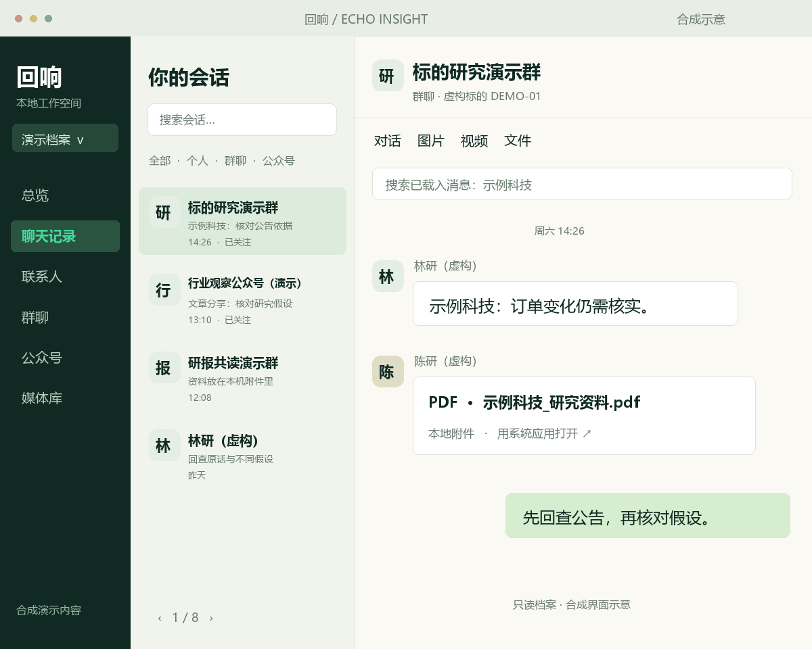
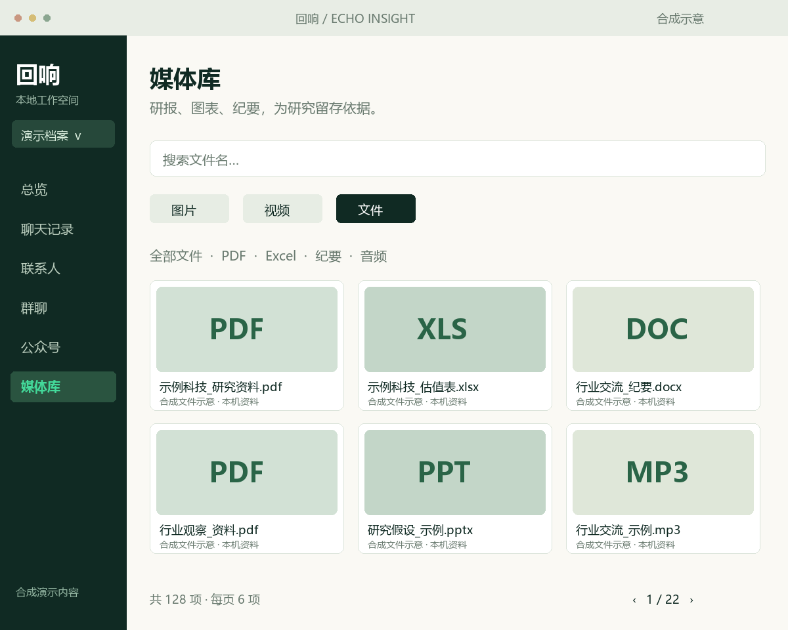

关注优质投资群
自己选择认可的投资群或研究公众号，添加关注。按最近消息浏览，减少在无关会话之间来回切换。
面向散户投资者 / WINDOWS 技术预览
关注自己认可的投资群与研究公众号，把标的讨论、文章分享与研报附件整理到本机。看到一条线索，再回查原话、核对依据。
档案功能已在本机研发验证 · 尚未打包公开
当前公开 0.1.0 为早期演示版，功能范围见版本记录。

01 / FOR INDIVIDUAL INVESTORS
给自行研究的散户投资者：关注认可的群与公众号，找到讨论过的标的和资料。这里整理研究线索，不判断群的质量，也不提供买卖信号。
自己选择认可的投资群或研究公众号，添加关注。按最近消息浏览，减少在无关会话之间来回切换。
用标的名称搜索当前已载入的消息，回看不同观点、时间和原话。滚动载入更早消息，逐步核对讨论依据。
在会话和媒体库找到研报 PDF、估值表 Excel 或交流纪要，按文件名搜索、分类和排序，打开可读取的本机附件。
FOLLOW THE ACCOUNTS / 公众号
行业观察、公司研究、政策解读，选择你认可的公众号添加关注。现在可以在公众号分类里只看关注，按最近消息回查本机已有分享；消息含有效网页链接时，打开原文再核对。
目前不抓取公众号全部历史文章，不自动读取文章正文。现有数据检查仅更新本机数据库，不生成公众号追踪简报。
上述定期追踪、文章正文解析、自动摘要与推送尚未接入。这是后续方向，不是已生成的简报。
02 / A CLOSER LOOK
群里分享的行业资料、公司研究与图表，都可以成为下一步核查的材料。找到文件，再用系统应用打开；本机有可解码原图时，尝试更清晰的图表版本。
原图文件存在不代表一定可解码。缺失文件无法恢复；部分格式需要本机 FFmpeg。视频与文件的发送者信息尚未完整关联。
查看功能与限制 ↗
03 / WATCH THE WALKTHROUGH
关注投资群与公众号，回查虚构标的的讨论，找到研报附件。视频也介绍公众号定期追踪的后续方向。
视频使用合成界面与本机合成旁白，包含中文字幕。公开 0.1.0 安装包仍是早期演示版，未包含视频中的新档案功能。
打开介绍视频 ↗04 / LOCAL BY DEFAULT
选择保存目录，在本机解密、解析和浏览。应用打开时默认每 5 分钟检查数据库变化；发生变化的库才重新处理。
了解数据保存与缓存 ↗解密数据库与图片缓存含明文私人内容，请保护保存目录。数据刷新与软件升级是两回事。
WHAT COMES NEXT / 规划中
后续希望定期追踪关注的公众号，按天或按周回顾新增文章与观点变化；把群聊中的标的提及整理为待研究清单，并对研报附件提取要点与关键假设。公众号定期追踪、正文解析、自动摘要与推送尚未接入。自动标的提取、附件自动总结与真实聊天 AI 总结尚未接入；当前合成摘要只演示群聊文字整理与原话引用，不读取 PDF 正文。
A WORKSPACE FOR YOUR RESEARCH